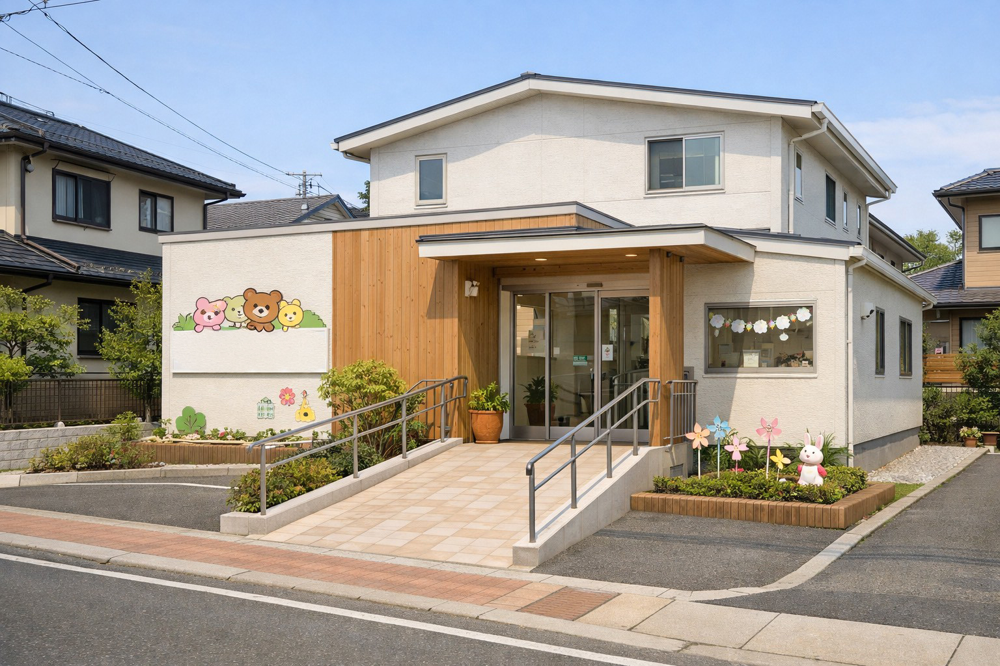

診療日・アクセス
【診療時間】18時まで受付
● 通常診療
★ 土曜・祝日 9:00-13:30
× 休診
| 月 | 火 | 水 | 木 | 金 | 土 | 祝 | |
|---|---|---|---|---|---|---|---|
| 09:30-13:00 | ● | × | ● | × | ● | ★ | ★ |
| 14:30-18:00 | ● | × | ● | × | ● | × | × |
18時まで受付しています。仕事帰りにもご来院いただけます。
アクセス
駐車場3台完備

〒808-0035
福岡県北九州市若松区白山1丁目18-1
若松駅から徒歩7分
電車でもお車でも来院しやすい場所です。
※迷った場合はお電話ください。
よくある質問（FAQ）
- Q1. 初診時の持ち物は何ですか？
- A 母子手帳・保険証・印鑑をご準備ください。
- Q2. 発熱がある場合はどうすればいいですか？
- A 判断に迷ったら、まずはお電話ください。
ご予約・ご相談は電話・Web予約からも可能です。